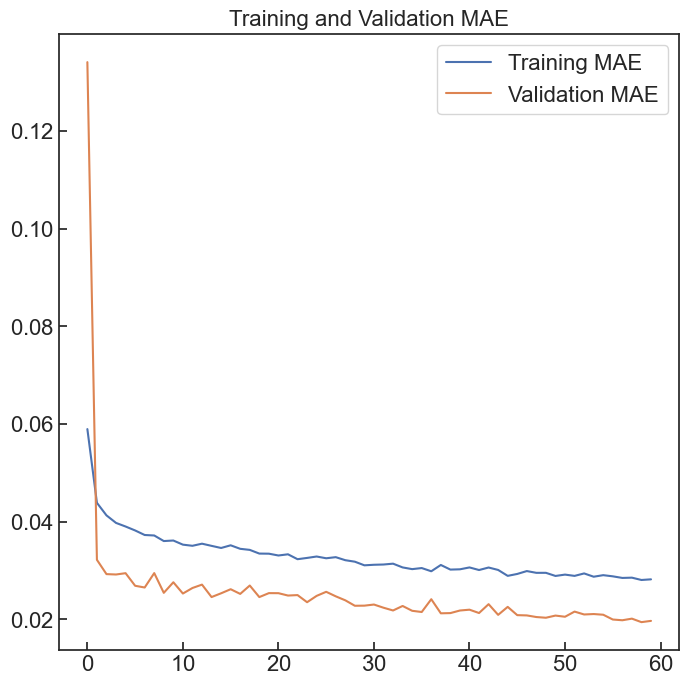
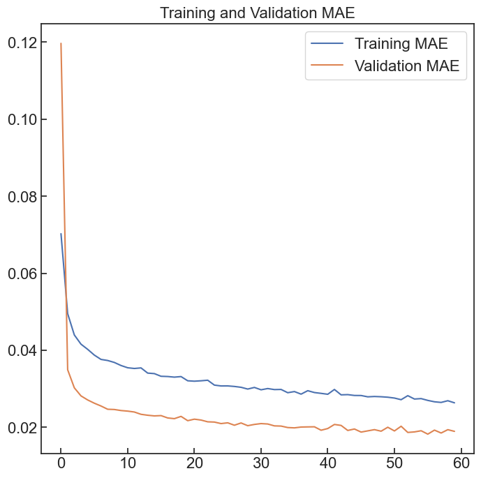
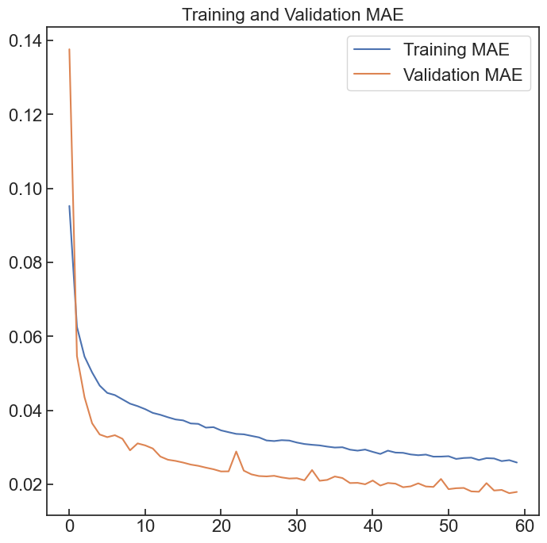
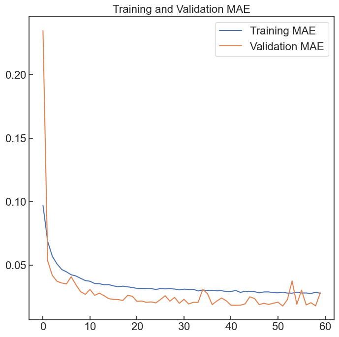

Number of unique alpha: 10
Shape of x: (30000, 128, 128, 1)
Shape of y: (30000,)
Size of training data: 24000
Size of validation data: 60000Number of unique alpha: 10
Shape of x: (30000, 128, 128, 1)
Shape of y: (30000,)
Size of training data: 24000
Size of validation data: 60000Text(0.5, 1.0, 'Training and Validation MAE')0.9
0.0
0.041789744
0.017508134
0.9818550607118115
Text(0.5, 1.0, 'Training and Validation MAE')
1.0
0.004203011
0.055231284
0.02021673
0.9784101390618816
Text(0.5, 1.0, 'Training and Validation MAE')
0.8
1.8626451e-09
0.0411429
0.016491443
0.9773964759075522
Text(0.5, 1.0, 'Training and Validation MAE')
0.9
0.0
0.03934105
0.015614207
0.9826111274373339
Text(0.5, 1.0, 'Training and Validation MAE')
1.0
0.0039029366
0.038392987
0.016203437
0.9814846496222708
Text(0.5, 1.0, 'Training and Validation MAE')1.0
0.0035548492
0.040151883
0.016490512
0.9840868974543233
Text(0.5, 1.0, 'Training and Validation MAE')
0.9
1.8626451e-09
0.035927635
0.015298066
0.9790607376113669
Text(0.5, 1.0, 'Training and Validation MAE')
1.0
0.0051142187
0.058112416
0.020683449
0.9778491438550463
Text(0.5, 1.0, 'Training and Validation MAE')
0.8
0.00026018728
0.040215496
0.01770708
0.9793763771740149
Text(0.5, 1.0, 'Training and Validation MAE')
0.9
0.00089638744
0.050202396
0.020576788
0.9768299044891678